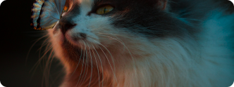

Protégeons-les Ensemble
Chaque don compte pour leur offrir une vie meilleure


Chaque don compte pour leur offrir une vie meilleure
permet de nourrir 5 animaux pendant une journée
permet d'héberger un animal sauvage pendant une nuit
permet de financer les soins vétérinaires complets pour un animal

Depuis 2010, Quatre Pattes œuvre sans relâche pour la protection et le bien-être des animaux en France. Notre mission est double : secourir les animaux en détresse et sensibiliser le public à la cause animale.
Chaque année, nous prenons en charge plus de 1000 animaux abandonnés, maltraités ou blessés. Grâce à notre réseau de familles d’accueil et nos partenariats avec des refuges, nous leur offrons une seconde chance.
Votre soutien est essentiel pour continuer notre mission. Ensemble, nous pouvons faire la différence pour ces êtres qui comptent sur nous.

LunaTrouvée dans la rue avec une patte cassée, Luna a été soigné et a retrouvé sa joie de vivre. Elle coule maintenant des jours heureux dans sa nouvelle famille. Janvier 2024 |
||
|---|---|---|

Luna
|

Oscar
|
Max
|
Vrai, les associations utilisent plus de 50% des dons pour leurs frais de fonctionnement
Faux
Vrai, ils refusent les animaux malades car c'est trop coûteux
Faux
Vrai, elles reçoivent beaucoup d'argent des donateurs
Faux
Partenaires à travers la France
Sauvés chaque année
Distribués par mois

"Grâce aux dons, nous avons pu accueillir plus
de 200 animaux cette année et leur offrir une
seconde chance."

"Le soutien de Quatre Pattes nous permet de
maintenir notre mission de protection des
animaux sauvages en détresse."

"Chaque don compte et nous aide à offrir un
avenir meilleur aux animaux abandonnés."